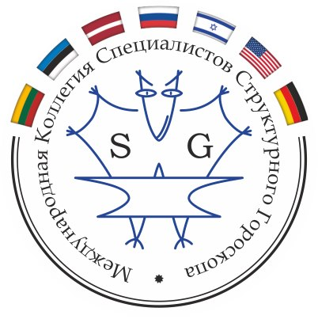
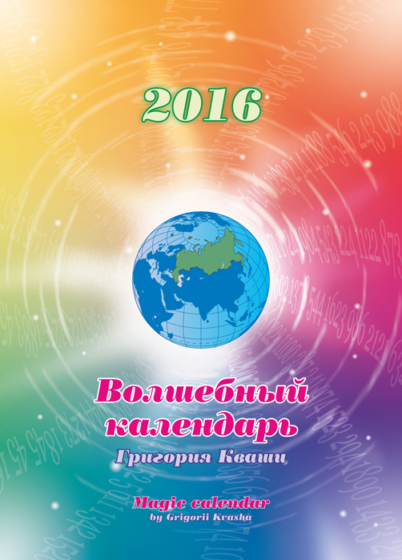

О НАС | ЛЕКЦИИ | КОНСУЛЬТАЦИИ | КОНТАКТЫ
Всем людям, во все времена, хотелось и хочется знать о своем будущем. Мы его пытаемся просчитать, подготовить, «подстелить соломку», или живем, как получится. Но прогнозы, хотя бы погодные, любим все. Прогноз погоды – достижение цивилизации и науки.
А теперь у нас появилась новая наука, которая говорит о Человеке во Времени. О его годе, о его дне, о его возрастном периоде и о тех этапах, целях, задачах, которые перед ним ставит настоящее время, о том, что должен пройти человек, что обрести и чему научиться, при этом не попадая в кризисное состояние.
Эта наука позволяет найти ответ на вопрос, какая профессия подходит именно Вам, определяет профессиональные склонности у ребенка, в какой области ему будет интереснее и легче получать образование и делать карьеру. Более того, теперь мы сможем получить рекомендации по выбору партнеров, друзей и даже приемных детей. Неправда ли, определенность в жизни придает уверенности?
Реальные проблемы, с которыми сталкивается человек: Новая научная система дает человеку четкое и ясное представление об его жизненном пути, о возможных вариантах его выбора.
Система называется Структурный гороскоп. Данную систему создал московский ученый Григорий Кваша.
Григорий Кваша выпустил более 25 книг, в которых изложил основы своей теории, которая продолжает развиваться и сейчас.
Напомню смысл слова «гороскоп», который совсем необязательно (как считают многие) связан со звездным небом.
«Горо» — от греческого «horo» — время, час; «скоп» — от «skopeo» — вижу, смотрю.
То есть глядя на время вашего рождения, вижу ваши свойства и возможности, ваш характер, и значит — судьбу.
Так что теория Г. С. Кваши, созданная без взгляда на звезды и планеты, а исключительно на время (год) рождения, имеет право называться гороскопом.
В ее основу положены структуры личности, определяемые по годовому и календарному знакам рождения человека.
Не путайте Структурный гороскоп с астрологией.
Единственное между ними сходство – это то, что используются те же ритмы времени - года, месяца и сутки.
Эти ритмы основаны на 12-летнем и 12-дневном циклах.
Ритмы, рассчитанные Григорием Квашой, основаны на 12-летнем и 12-дневном циклах.
Они помогают оптимизировать ваше карьерное продвижение и совершать важные поступки в вашей жизни именно в тот период,
в тот год или даже в тот день, который будет наиболее удачен и принесет Вам максимальную пользу!
Есть люди, которые в своей жизни многое успевают и, (как это кажется удивительным для незнающих людей) все,
за что они берутся, получается, развивается большими темпами и всегда с выгодой. Так может они просто знают, что им делать и когда?
Это не магия. Это знания о реальном мире.
Благоприятные года, месяца и дни для каких-либо серьезных поступков Вашей жизни, мы можем узнать по Структурному гороскопу.
Стратегическое прогнозирование по системе 12-летнего цикла - залог успеха для каждого активного человека.
Так же, Григорий Кваша создал Волшебный календарь. Каждый день в нем показан с точки зрения Структурного гороскопа.
Волшебный календарь поможет Вам быть в курсе каждого Вашего дня и заранее планировать важные дела на благоприятное время.

Если Вы задаетесь вопросами: «В каком коллективе Вам работать, куда отдать ребенка учиться», если сегодня у вас спад, кризис, или целый год у вас проходит достаточно тяжело, все вокруг, как будто рушится, «валится из рук», не получается, деньги не идут, не дает продвижения начальник, подводит здоровье.